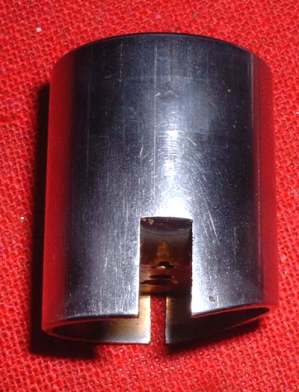
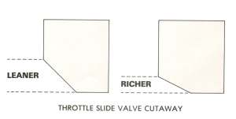
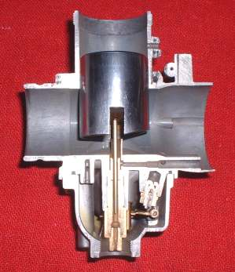
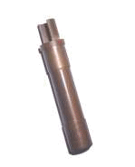
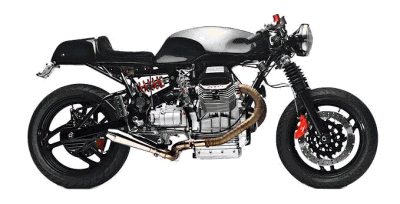
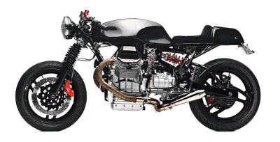

¶ Throttle Slides, sometimes called Throttle Valves, control the mixture from Idle to about 35% open. Yeah, I know, the Idle Circuit is supposed to control that. Well, it does and so does the Throttle Slide. Think of it as a relay race. As the racers on the different teams approach each other they sort of overlap so there is a smooth transition, of the baton, from one runner to the other. So it is with the Carburetor Circuits. We want a smooth transition from one Circuit of the Carburetor to another. Other then the cut out size, the slides can have a bevel cut out for left or right throttle stop adjustment. On some racing Carburetors there are no idle bevel cut out.
 Throttle Slide Cutaway |
 Throttle Slide |
The Throttle slide has a cut out on the inlet, Air Cleaner, side of the Carburetor Throat. This cut out makes the fuel mixture leaner or richer. Most people never change the Throttle Slide because the Slide is somewhat pricey, ranging from $50.00 to $80.00 and up. Also, I suspect most people don't even know that the Slide changes the fuel mixture. They think it just controls the throttle opening which, of course, it does in addition to controlling the just off Idle fuel mixture.
Come to think about it, in the last 50 years, I may have had about a million Carburetor Slides out of a million different Carburetors in my grimy little hands. I can't remember ever replacing one. Not even once. If you are smart enough to figure out that you need a 3.0 slide instead of the 2.5 slide you now have and you replace it AND the engine now runs better. Well, you are way above my pay grade. Why are you even reading this?

 |
 |
Copyright © 1999-2015 dansmc.com. All rights reserved.